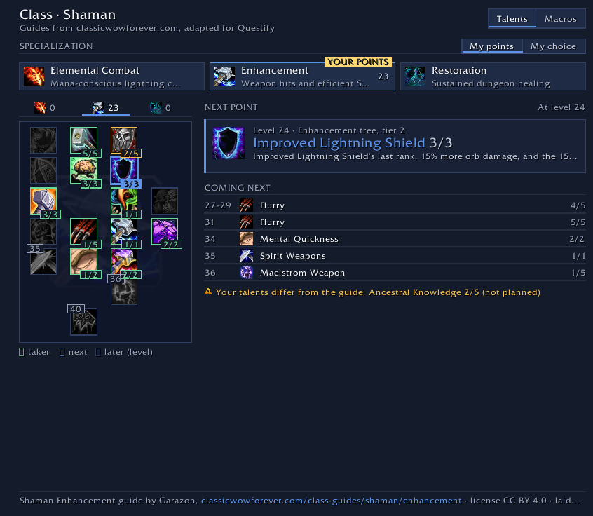

The class guides of classicwowforever.com, laid out for your level: the specialization, the tree with the points taken, the next point and the ones after.
Questify follows the tree where you spent your points, or the one you pick. It tells you when your talents leave the guide.
Options, Class section. Dwarf shaman, level 32, Enhancement.
